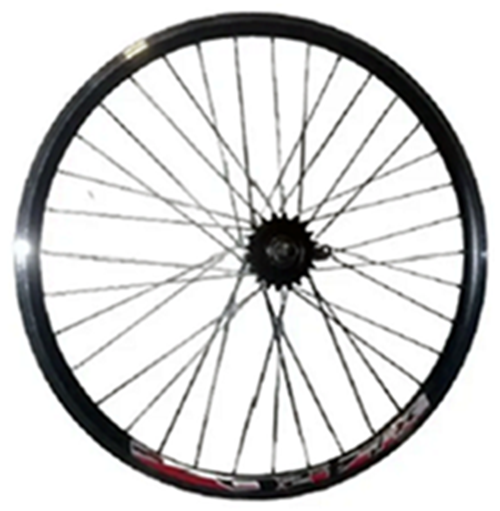
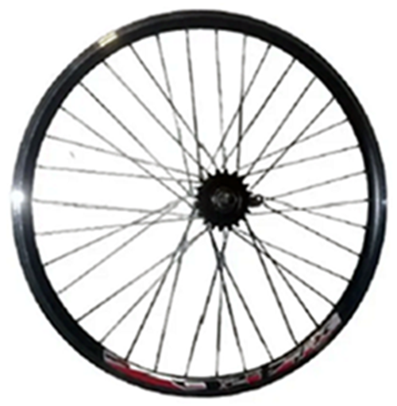
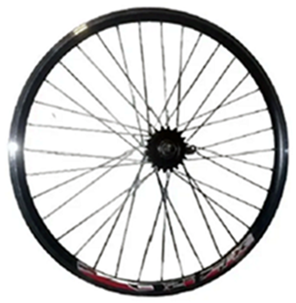
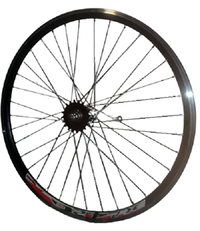
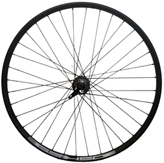
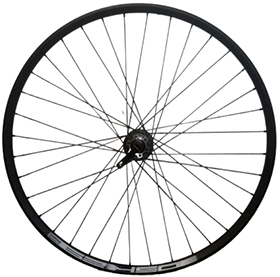

Que es Sebalo?
Sebalo es una pequeña empresa que se encarga de innovar en el armado de las ruedas de bicicleta, incorporando teconologia para un mejor redinmiento en el rodar de las bicicletas, Sebalo es dueño del centrador electroacustico que consta de un proceso en el que se puso a disposicion tecnologiapara medir la tension interna por rayo, poder medir las vibraciones yrigides de los rayos a su mayor tension, por medio de sensores se pudo lograr que todos los rayos queden estar a la misma tension y tener mayor duravilidad y mejor andar. Por que los rayos se rompen cuando tienen menos tension que los otros se comienzan a romper. el centrador electroacustico nos permite crear una circunferencia casi perfecta.

Rueda Doble pared 26 delantera Rueda Doble pared 26 trasera Rueda doble pared 26 bicimoto Foxter XR 4.20 Foxter XR 4.20 Contrapedal Rayos 2,5 $2.700 $2.700 $4000


Rueda doble pared 26 Rueda doble pared 26 Delantera Rueda doble pared 26 trasera Contrapedal Foxter XR 4.20 Houston VT-X Hoston VT-X $3500 $2700 $2700


Rueda doble pared 26 Rueda 26 DSK delantera Rueda 26 DSK trasera para piñon contrapedal Houston VT-X para disco a toenillos a rosca y disco a tornillos
$3500 $3800 $3800


Rueda triple pared 26 ARRIV Rueda triple pared 26 ARRIV Rueda multirayos de 72 Delantera Trasera Contrapeda $4.400 $4.400 $3800

 .
.
Rueda multirayos delantera vuelo alto Rueda doble pared Foxter trasera Rueda doble pared Houston Citi Rodado 26 Foxter Rodado 28 Rodado 28 delantera $2500 $3000 $2900


Rueda doble pared City Houston Rueda doble pared City Houston Rueda Crinches doble pare trasera rodado 28 contrapedal rodado 28 VRC 701 rodado 28 delantera $2900 $3600 3200


Rueda Crinches doble pared Rueda Crinches doble pared Rueda triple pàred delantera VRC 701 rodado 28 Trasera VRC 701 rodado 28 Contrapedal Foxter 2.19 rodado 28 $3300 $3800 $3800


Rueda triple pàred trasera Rueda triple pàred contrapedal Rueda triple pared negra Foxter 2.19 rodado 28 Foxter 2.19 rodado 28 Rayos negros Foxter 2.19 rodado 28 $3800 $4100 $4500

 

Rueda doble pared 29 X-29 Rueda doble pared 29 X-29 Rueda doble pared 29 DSK delantera para freno V-Breke X-29 Trasera para freno V-breke Trasera para freno a disco a tornillos $3200 $3300 $3800